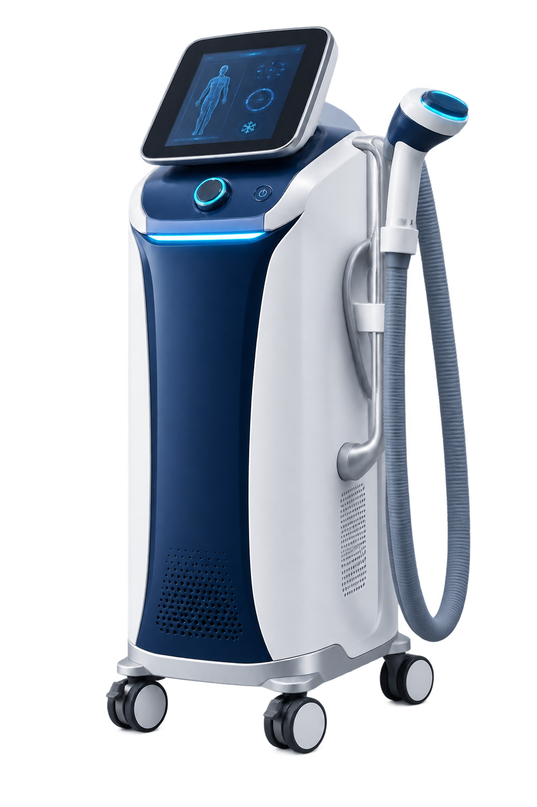

MAIN SERVICE AREA서울·경기·인천수도권 메인 운영 권역 · 담당자 연결
수도권 메인 권역전기 공기 냉각 방식 · 원내 방문 데모
별도 가스 충전 없이,
냉각 장비 운영과 도입 상담을 한 번에.
전기 공기 냉각 방식의 제품 사양과 가스 용기 충전·보관 여부를 원장님 병원에서 직접 확인하세요. 구체적인 성능과 사용 목적은 제품별 허가사항을 기준으로 안내합니다.
✓ 전기 공기 냉각 방식
✓ 원내 방문 시연 상담
✓ 설치·교육·A/S 안내
전국 방문 상담
지역과 일정을 확인해 담당 매니저를 연결해드립니다.VISIT DEMO NETWORK
전국 어디서나
원내 방문 시연을 상담하세요.
병원 위치와 희망 일정을 남겨주시면 방문 가능 여부를 확인해 가장 빠른 상담 일정을 안내합니다.
서울·경기·인천대구·경북·강원부산·울산·경남대전·세종·충남·충북광주·전남·전북·제주도
전국 5개 권역 운영권역별 담당자가 방문 가능 일정을 안내합니다.
방문 시연 가능방문 상담 가능
SEOUL DISTRIBUTION HUB
서울에서 전국으로
서울에서 전국으로
이어지는 방문 네트워크
수도권 허브에서 각 권역 담당자에게 빠르게 연결합니다.
5개 권역
1:1 담당 연결
서울 허브
충청
대구·경북
부울경
호남
원장님 페인포인트
도입 전에 가장 먼저 따져봐야 할 운영 조건입니다.BEFORE YOU DECIDE
병원 경영과 진료 현장에서
이런 고민하고 계시지 않나요?
“매달 발생하는 CO₂ 가스 충전비와 교체 번거로움”
가스 구매·충전과 용기 보관, 교체 중 사용 중단까지 운영 부담이 반복됩니다.
운영비 구조 확인 →“허가사항과 적용 기준을 명확히 설명해야 할 때”
환자 안내와 병원 운영을 함께 고려하려면 제품 허가사항과 실제 비급여 적용 기준을 먼저 확인해야 합니다.
비급여 적용 상담 →“치료 대기시간과 스태프 업무 부담을 줄이고 싶을 때”
장비 조작과 세팅 시간을 확인하고 기존 진료 동선에 맞는지 직접 테스트해보세요.
원내 시연 신청 →핵심 차별점
제품 사양과 실제 도입 조건을 방문 시연에서 확인하세요.WHY ELECTRIC AIR COOLING
원장님 병원에 필요한
4가지 운영 이점
- 01별도 가스 충전 없는 방식
제품별 공식 사양을 기준으로 가스 구매·충전·보관 필요 여부를 확인합니다.
- 02비급여 적용 기준 상담
제품 허가사항과 의료기관별 청구 기준을 바탕으로 적용 가능 여부를 안내합니다.
- 03냉각 성능 · 노즐 구성 확인
사용 부위와 목적에 맞춘 장비 구성과 제품별 공식 사양을 확인합니다.
- 04프로그램별 사용 시간 확인
허가된 사용 방법과 원내 진료 동선 적합성을 방문 시연에서 확인합니다.
제품 설명
병원 현장에서 확인하는 전기 공기 냉각 솔루션
제품 콘셉트 이미지

ELECTRIC AIR COOLING SYSTEM
가스통 없이 사용하는
신장분사치료기
전원을 이용해 냉각 공기를 전달하는 방식의 장비입니다. 실제 판매 모델, 조작 방법과 진료 동선 적합성은 원내 시연 및 공식 제품 자료에서 확인할 수 있습니다.
제품별 냉각 성능
공식 사양과 허가사항을 기준으로 냉각 공기 전달 조건 확인
제품별 노즐 구성
허가된 사용 목적과 제공 구성을 공식 제품 자료로 확인
조작 인터페이스
실제 판매 모델의 프로그램 설정과 사용 방법을 시연에서 확인
방식 비교
기존 가스 방식과 전기 공기 냉각 방식의 운영 차이SIDE BY SIDE
한눈에 보는
CO₂ 가스 방식 vs 전기 공기 냉각 방식
| 비교 항목 | CO₂ / 액화질소 가스 방식 | 전기 공기 냉각 방식 가스 충전 없는 냉각 시스템 |
|---|---|---|
| 소모품·운영비 | 가스 구매 및 충전 비용 발생 | ✓ 별도 가스 충전이 필요 없는 방식 |
| 보관·관리 | 고압 용기 보관과 잔량 확인 필요 | ✓ 별도 가스 용기 보관 불필요 |
| 냉각 공급 | 가스 잔량에 따른 사용 조건 확인 | ✓ 전원을 이용한 연속 공기 냉각 |
| 운영 편의 | 가스 교체·충전 일정 관리 필요 | ✓ 전원 연결 후 프로그램별 사용 |
| 비급여 상담 | 장비별 허가·적용 기준 확인 | ✓ 허가사항 및 적용 기준 개별 안내 |
※ 비교 내용은 일반적인 운용 방식에 대한 안내입니다. 실제 성능·사용 목적·수가 적용 여부는 제품의 공식 허가사항과 의료기관별 기준을 확인해야 합니다.
원내 운영 구조
도입비·수가·환자 수를 반영한 개별 상담이 필요합니다.OPERATING ECONOMICS
가스 충전비가 없어,
비급여 운영비 구조를 더 단순하게 검토할 수 있습니다.
허가된 프로그램과 사용 시간 안내
전기 공기 냉각 제품의 운영 방식 안내
도입 조건과 예상 운영 건수로 검토
수가 적용 상담
진료과목과 제품 허가사항, 의료기관별 청구 기준을 확인해 도입 전 필요한 자료와 안내 범위를 상담해드립니다.
내 병원 기준으로 상담 →RISK-FREE DEMO OFFER
원장님 병원에서 직접
장비 성능과 도입 조건을 확인하세요.
비용 부담 없이 원내 방문 시연과 제품 자료, 설치·교육·A/S 범위를 상담받으세요.